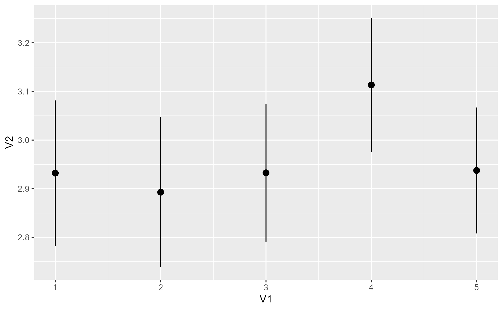
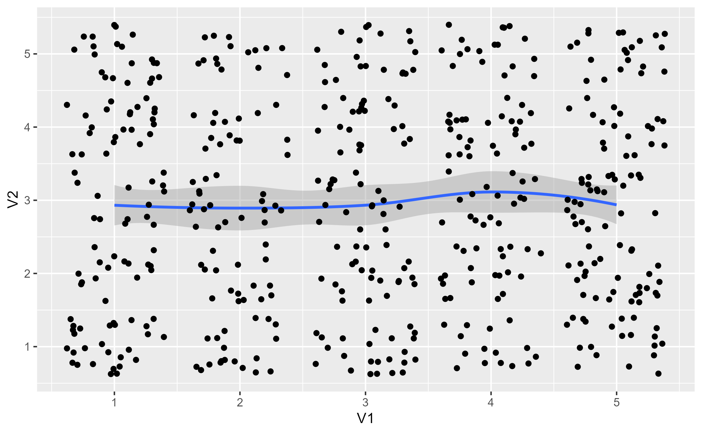

Capture a snapshot of a method as a pre-filled function
Source:R/workflows-capture.R, R/aliases.R
ggtrace_capture_fn.RdReturns a ggproto method as a function with arguments pre-filled to their values when it was first called
Note
For functions and methods that take ..., arguments passed to ... are captured and
promoted to function arguments. The captured values are available for inspection via formals().
Tracing context
When quoted expressions are passed to the cond or value argument of
workflow functions they are evaluated in a special environment which
we call the "tracing context".
The tracing context is "data-masked" (see rlang::eval_tidy()), and exposes
an internal variable called ._counter_ which increments every time a
function/method has been called by the ggplot object supplied to the x
argument of workflow functions. For example, cond = quote(._counter_ == 1L)
is evaluated as TRUE when the method is called for the first time. The
cond argument also supports numeric shorthands like cond = 1L which evaluates to
quote(._counter_ == 1L), and this is the default value of cond for
all workflow functions that only return one value (e.g., ggtrace_capture_fn()).
It is recommended to consult the output of ggtrace_inspect_n() and
ggtrace_inspect_which() to construct expressions that condition on ._counter_.
For highjack functions like ggtrace_highjack_return(), the value about to
be returned by the function/method can be accessed with returnValue() in the
value argument. By default, value is set to quote(returnValue()) which
simply evaluates to the return value, but directly computing on returnValue() to
derive a different return value for the function/method is also possible.
Examples
library(ggplot2)
set.seed(47)
df <- as.data.frame(matrix(sample(5, 1000, TRUE), ncol = 2))
table(df)
#> V2
#> V1 1 2 3 4 5
#> 1 28 16 15 23 21
#> 2 19 16 19 15 15
#> 3 23 22 18 21 20
#> 4 15 21 17 26 18
#> 5 20 27 26 18 21
base <- ggplot(df, aes(x = V1, y = V2))
p1 <- base + stat_summary(orientation = "x")
p1
#> No summary function supplied, defaulting to `mean_se()`

p1_compute_panel <- ggtrace_capture_fn(p1, method = StatSummary$compute_panel)
#> No summary function supplied, defaulting to `mean_se()`
# `p1_compute_panel` is a copy of the ggproto method
body(p1_compute_panel)
#> {
#> data <- flip_data(data, flipped_aes)
#> fun <- make_summary_fun(fun.data, fun, fun.max, fun.min,
#> fun.args)
#> summarised <- summarise_by_x(data, fun)
#> summarised$flipped_aes <- flipped_aes
#> flip_data(summarised, flipped_aes)
#> }
ggbody(StatSummary$compute_panel, as.list = FALSE)
#> {
#> data <- flip_data(data, flipped_aes)
#> fun <- make_summary_fun(fun.data, fun, fun.max, fun.min,
#> fun.args)
#> summarised <- summarise_by_x(data, fun)
#> summarised$flipped_aes <- flipped_aes
#> flip_data(summarised, flipped_aes)
#> }
# Its arguments are pre-filled (captured at runtime)
sapply(formals(p1_compute_panel), class)
#> data scales fun.data fun fun.max fun.min
#> "data.frame" "list" "NULL" "NULL" "NULL" "NULL"
#> fun.args na.rm flipped_aes
#> "list" "logical" "logical"
# Runs as it should
p1_compute_panel()
#> No summary function supplied, defaulting to `mean_se()`
#> x group y ymin ymax PANEL flipped_aes
#> 1 1 -1 2.932039 2.782630 3.081447 1 FALSE
#> 2 2 -1 2.892857 2.738537 3.047177 1 FALSE
#> 3 3 -1 2.932692 2.791176 3.074209 1 FALSE
#> 4 4 -1 3.113402 2.975241 3.251563 1 FALSE
#> 5 5 -1 2.937500 2.807977 3.067023 1 FALSE
# You can inspect changes to its behavior outisde of ggplot
# For example, see what happens when aes is flipped via `orientation = "y"`
p1_compute_panel(flipped_aes = TRUE)
#> No summary function supplied, defaulting to `mean_se()`
#> y group x xmin xmax PANEL flipped_aes
#> 1 1 -1 2.809524 2.666881 2.952167 1 TRUE
#> 2 2 -1 3.264706 3.124729 3.404683 1 TRUE
#> 3 3 -1 3.210526 3.062456 3.358597 1 TRUE
#> 4 4 -1 3.009709 2.870024 3.149393 1 TRUE
#> 5 5 -1 3.031579 2.881586 3.181572 1 TRUE
# We confirm this output to be true when `orientation = "y"` in `stat_summary()`
p2 <- base + stat_summary(orientation = "y")
p2_compute_panel <- ggtrace_capture_fn(p2, method = StatSummary$compute_panel)
#> No summary function supplied, defaulting to `mean_se()`
identical(p1_compute_panel(flipped_aes = TRUE), p2_compute_panel())
#> No summary function supplied, defaulting to `mean_se()`
#> No summary function supplied, defaulting to `mean_se()`
#> [1] TRUE
# You can interactively explore with `debugonce(p2_compute_panel)`
# Note that the captured method looks slightly different if the method takes `...`
p3 <- base + stat_smooth() + geom_jitter()
p3
#> `geom_smooth()` using method = 'loess' and formula = 'y ~ x'

p3_compute_panel <- ggtrace_capture_fn(p3, method = Stat$compute_panel)
#> `geom_smooth()` using method = 'loess' and formula = 'y ~ x'
# For one, the body is different - it's a "wrapper" around the captured method
body(p3_compute_panel)
#> {
#> cur_args <- mget(names(formals(rlang::current_fn())))
#> specs <- names(cur_args) %in% names(formals(inner))
#> do.call(inner, c(cur_args[specs], cur_args[!specs]))
#> }
# The captured method is stored in the `"inner"` attribute
attr(p3_compute_panel, "inner")
#> function (self, data, scales, ...)
#> {
#> if (empty(data))
#> return(data_frame0())
#> groups <- split(data, data$group)
#> stats <- lapply(groups, function(group) {
#> self$compute_group(data = group, scales = scales, ...)
#> })
#> non_constant_columns <- character(0)
#> stats <- mapply(function(new, old) {
#> if (empty(new))
#> return(data_frame0())
#> old <- old[, !(names(old) %in% names(new)), drop = FALSE]
#> non_constant <- vapply(old, vec_unique_count, integer(1)) >
#> 1L
#> non_constant_columns <<- c(non_constant_columns, names(old)[non_constant])
#> vec_cbind(new, old[rep(1, nrow(new)), , drop = FALSE])
#> }, stats, groups, SIMPLIFY = FALSE)
#> non_constant_columns <- unique0(non_constant_columns)
#> dropped <- non_constant_columns[!non_constant_columns %in%
#> self$dropped_aes]
#> if (length(dropped) > 0) {
#> cli::cli_warn(c("The following aesthetics were dropped during statistical transformation: {.field {dropped}}.",
#> i = "This can happen when ggplot fails to infer the correct grouping structure in the data.",
#> i = "Did you forget to specify a {.code group} aesthetic or to convert a numerical variable into a factor?"))
#> }
#> data_new <- vec_rbind0(!!!stats)
#> data_new[, !names(data_new) %in% non_constant_columns, drop = FALSE]
#> }
#> <environment: 0x000001375849c898>
# Captured argument defaults are again available for inspection via `formals()`
# Note that arguments passed to the `...` are promoted to function arguments
names(ggformals(Stat$compute_panel))
#> [1] "self" "data" "scales" "..."
names(formals(p3_compute_panel))
#> [1] "self" "data" "scales" "method" "formula"
#> [6] "se" "n" "fullrange" "level" "na.rm"
#> [11] "method.args" "span" "xseq" "flipped_aes"
# It works the same otherwise - plus you get the benefit of autocomplete
head(p3_compute_panel())
#> x y ymin ymax se flipped_aes PANEL group
#> 1 1.000000 2.932039 2.656568 3.207510 0.1402053 FALSE 1 -1
#> 2 1.050633 2.928156 2.671397 3.184915 0.1306815 FALSE 1 -1
#> 3 1.101266 2.924475 2.681907 3.167044 0.1234590 FALSE 1 -1
#> 4 1.151899 2.920997 2.688081 3.153914 0.1185468 FALSE 1 -1
#> 5 1.202532 2.917722 2.690122 3.145322 0.1158405 FALSE 1 -1
#> 6 1.253165 2.914649 2.688468 3.140830 0.1151184 FALSE 1 -1
head(p3_compute_panel(level = .99)[, c("ymin", "ymax")])
#> ymin ymax
#> 1 2.569496 3.294582
#> 2 2.590240 3.266072
#> 3 2.605235 3.243716
#> 4 2.614459 3.227536
#> 5 2.618182 3.217263
#> 6 2.616976 3.212323
head(p3_compute_panel(flipped_aes = TRUE))
#> y x xmin xmax se flipped_aes PANEL group
#> 1 1.000000 2.809524 2.533395 3.085653 0.1405400 TRUE 1 -1
#> 2 1.050633 2.844813 2.587716 3.101911 0.1308538 TRUE 1 -1
#> 3 1.101266 2.878797 2.636755 3.120838 0.1231908 TRUE 1 -1
#> 4 1.151899 2.911475 2.680469 3.142480 0.1175739 TRUE 1 -1
#> 5 1.202532 2.942847 2.718976 3.166717 0.1139424 TRUE 1 -1
#> 6 1.253165 2.972913 2.752581 3.193245 0.1121416 TRUE 1 -1
# Interactively explore with `debugonce(attr(p3_compute_panel, "inner"))`